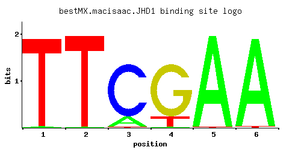

← All factors / TF RECORD
JHD1
YER051W, KDM2, JHDM1
JmjC domain family histone demethylase specific for H3-K36, similar to proteins found in human, mouse, drosophila, X. laevis, C. elegans, and S. pombe
01 / RECOMMENDED MATRIX
Best-performing DNA-binding model.

Fisher’s P-value0.001618
Information content9.568
Max PWM score7.6
Recommended cutoff7.6
View and copy the recommended matrices ↘
Position frequency matrix (PFM)
A | 0.012 0.004 0.153 0.005 0.994 0.986 C | 0.001 0.001 0.841 0.001 0.001 0.001 G | 0.001 0.001 0.001 0.841 0.001 0.001 T | 0.986 0.994 0.005 0.153 0.004 0.012
Position count matrix (PCM)
A | 1 0 15 0 99 98 C | 0 0 84 0 0 0 G | 0 0 0 84 0 0 T | 98 99 0 15 0 1
Position weight matrix (PWM)
A | -3.28 -4.38 -0.74 -4.16 1.13 1.13 C | -5.19 -5.19 1.54 -5.19 -5.19 -5.19 G | -5.19 -5.19 -5.19 1.54 -5.19 -5.19 T | 1.13 1.13 -4.16 -0.74 -4.38 -3.28
02 / COMPARATIVE BENCHMARKS
Alternative candidate matrices 1
Historical matrix candidates from the original ScerTF database. Expand a source to inspect its original logo, scores, and matrix values.
JHD1Foat et. al.P = 0.2524View matrix ↘
03 / EXPERIMENTAL CONTEXT
Gene-level annotations and interactions.
Genes bound in ChIP-chip experiments 1 genes
No Data
Genes affected by TF deletion 1 genes
No Data
Genes supported by both experiments 1 genes
No Data